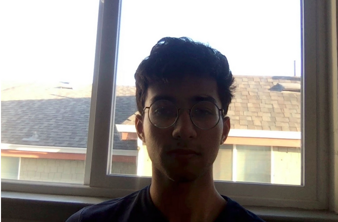

In this project, we aim to figure out real-time techniques of color correcting faces that are non-optimally lit either by irregular lighting or dim lighting.
Our team is:
(skip to end of parenthesis if you’re in a hurry)
[Consider this - it’s 5 PM, you’ve been working non-stop since lunch break, and you’ve got one last meeting for the day. Since this last meeting is just a quick check in with your team members, you’ve decided that you’re going to let your hair down and take this meeting from your newly purchased Ikea EZ chair that's seductively grinning at you in the glory of the golden hour (it’s late in the year). You’re excited. You grab your laptop and set yourself up on the chair with a pillow in your lap and the lappy on the pillow. Open the lapt..oops ‘Low Battery”. “It’s alright,” you console yourself.. You quickly grab your charger and reset yourself in the chair. Open your Calendar app and click the zoom link. It’s loading... “wow, this is going to be a relaxing last meeting of the day. I’m excited to tell my team about the extra funding we’re getting,” you’re thinking. The meeting opens, you see your all your teammates’ beautiful faces but wait..what..no..come on..you look like this -
|  |
Your neighbor, through his window, is better lit than you are. There are heavy dark shadows on your face. “How can i be communicating such good news from this place of darkness,” you think to yourself. You don’t want to leave the EZ chair but you have to. Sucks, right?]
What if you didn’t have to worry about the lighting when getting onto a virtual meeting? Wouldn’t that be awesome. You wouldn’t be stuck on your claustrophobia-inducing studio-like desk all day, but could take video meetings from anywhere in your house! This is the problem we’re trying to solve in this project - namely, color correcting irregularly/dimly lit faces in real time.To do this, we first roughly extract the face region and rectify the skin color distribution in a color space. Then, we perform color and brightness correction around the face in the original image to achieve a proper color balance of the facial image, which is not affected by luminance and background colors. The main challenge in solving the problem is ensuring that this is done in real time i.e. for live video streams.
We will take pictures or headshots of people of different races and backgrounds, extract the face region and rectify the skin color distribution, and perform color and brightness correction so the image is not affected by luminance and background color.
Quality and performance can be measured by the clarity of someone’s face in the headshot pictures. This product should work on all races and backgrounds. We expect that making this demo work for all backgrounds and races might be challenging.
If we can successfully finish part 1, we would like to test that our product works for real time video streams. This means that when we move around or switch backgrounds, the algorithm automatically rebalances and brightens our faces.
Quality and performance metrics include clear live stream images where our faces are not obscured. The runtime of the product should not significantly increase when we switch to video streaming from simple camera work (as outlined in part 1).